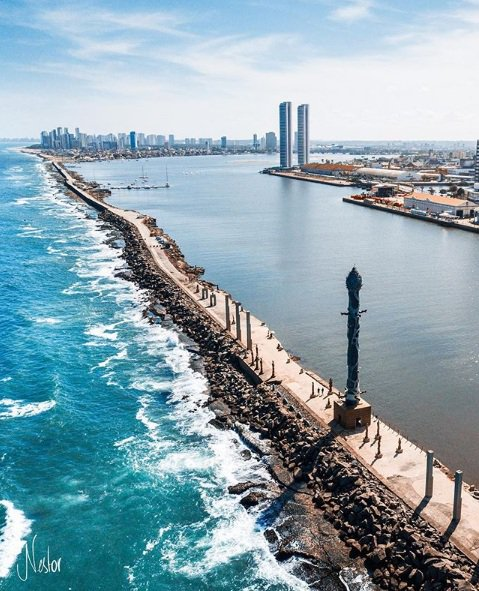

Imagens da Torre de Cristal

Uma vista deslumbrante da torre.

Detalhes arquitetônicos da torre.
A Torre de Cristal é um marco histórico no bairro do Recife Antigo. Ela é conhecida por sua arquitetura única e beleza impressionante.
A escultura foi criada pelo artista plástico Francisco Brennand e se trata de uma árvore com cerca de 32 metros de altura, sendo composta por argila e bronze. Ela representa a Mata Atlântica e seu nome faz referência ao topo da obra: uma Flor de Cristal, descoberta por Roberto Burle Marx, um paisagista.
Uma vista deslumbrante da torre.
Detalhes arquitetônicos da torre.
A Torre de Cristal está localizada no coração do Recife Antigo, proporcionando uma vista panorâmica do rio e da cidade.